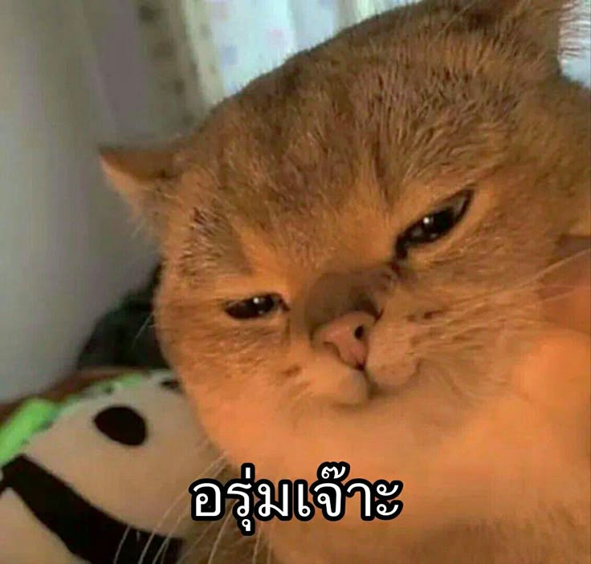
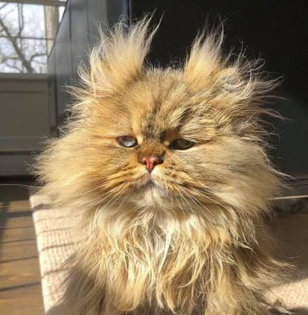
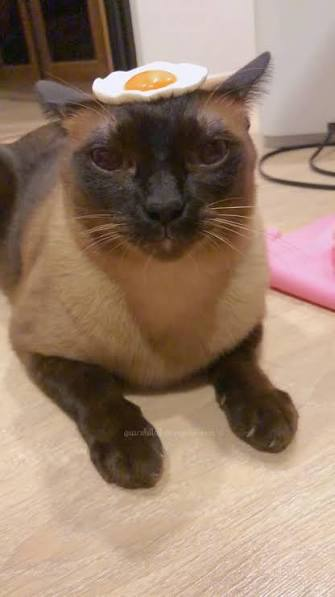

แมวเป็นสัตว์เลี้ยงที่ได้รับความนิยมอย่างมากทั่วโลกด้วยนิสัยที่น่ารัก ขี้อ้อน และมีความเป็นตัวของตัวเองสูง

บนโลกนี้มีแมวหลากหลายสายพันธุ์ให้เลือกเลี้ยงแต่ละสายพันธุ์ก็มีเอกลักษณ์และนิสัยที่แตกต่างกันออกไป
กลุ่มแมวที่มีต้นกำเนิดจากต่างแดนมักจะมีลักษณะขนและรูปร่างที่โดดเด่น
แมวขนยาว หน้าบี้ มีนิสัยสงบและเรียบร้อย เหมาะสำหรับการเลี้ยงในระบบปิด

เนื่องจากมีขนยาว ผู้เลี้ยงจึงต้องใส่ใจเรื่องความสะอาดเป็นพิเศษ
ควรใช้หวีซี่ห่างหรือแปรงสลิกเกอร์ในการสางขนที่พันกันออกอย่างเบามือทุกวัน
แมวไทยมีชื่อเสียงในระดับโลกในเรื่องของความฉลาด ปราดเปรียว และสีสันที่เป็นเอกลักษณ์
แมวที่มีแต้มสีเข้มตามจุดต่างๆ ของร่างกาย เช่น หน้า หู หาง และเท้า ทั้งหมด 9 ตำแหน่ง

คนสมัยก่อนในยุคกรุงศรีอยุธยาเชื่อว่า หากใครเลี้ยงแมววิเชียรมาศจะนำโชคลาภและทรัพย์สินมาให้แก่เจ้าของ